Uncheck “Use Windows ink” function on Wacom driver’s mapping tap. If you using non-wacom tablet. I’m not sure it is working correctly.
When using a tablet, “set the right mouse key” to the pen button. It is convenient to use the right mouse button for selecting tools and some functions.
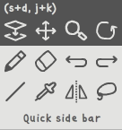
Place your cursor on the canvas and right-click to display the Tools menu.
Move the cursor to the tool icon you want to select and release the right mouse button to select it.
To move the canvas, click+drag the bright part of the toolbox. (Left+Right-click of the mouse)
The zoom tool, rotation tool, and image movement tool do not move the canvas and use tool-specific functions. (Click and drag)
To use the fill-pen, select the tool and then draw the desired area on the canvas. You can draw a polygon with a simple click. When you right-click, three icons will appear. If you press the undo button, you can go back to the area you drew little by little. Place the cursor on the OK button and release the right-click to complete.
Quick side bar moves to the current mouse cursor. Right-click or click outside the sidebar to return to its original position.
Click here for instructions on how to use the lasso tool.
The alphabet in parentheses is (right-handed shortcut, left-handed shortcut)
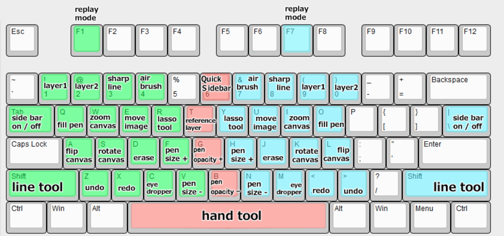
The green area is right-handed, and the blue area is left-handed. By default, press the key to enable the feature and turn it off when you release it. Hints appear when you hover over a button. See the shortcut descriptions for those hints.
| Function | Shortcut | Function | Shortcut |
|---|---|---|---|
| Draw / Replay mode | F1 or f7 |
||
| Capture mode | Ctrl+C |
||
| Save file | Ctrl+S |
Save file as | Ctrl+Shift+S |
| Load file | Ctrl+O |
Load file from clipboard | Ctrl+V |
| Function | Shortcut | Function | Shortcut |
|---|---|---|---|
| Select layer 1 | 1 or 9 |
Select layer 2 | 2 or 0 |
| View only that layer ON/OFF | Press twice or more layer select shortcut | ||
| Check layer 1 | 1 + w or
9 + i |
check layer 2 | 2 + w or
0 + i |
| Erase | D or J |
Lasso | R or Y |
| Line | Shift |
Eye-droper | C or M |
| Select transparent color or cancel | C+Space or
M+Space |
||
| Reference layer window | T |
Fill pen | Q or O |
| Adjust pen size | F V or
H N |
Adjust erase size | D + F
V or J+H N |
| Adjust pen opacity | G B |
Adjust erase opacity | D+G
B or J+G B |
| Zoom in/out canvas | W or I |
Move canvas | Space |
| Flip canvas horizontal | A or L |
Rotate canvas | S or K |
| Move canvas image | E or Y |
||
| undo | Z or . |
redo | X or , |
| Quick Sidebar | S+D or
J+K or 6 |
| Function | Shortcut | Function | Shortcut |
|---|---|---|---|
| Playback Start/Stop | Enter or Space
or Right-click on the canvas |
Adjust playback Speed | ↑ ↓ or
F V or H N |
| Jump frame by stroke units | ← → or
Z X or . , |
Jump 1 frame | Press the item key on the left while
pressing shift |
| Function | Shortcut | Function | Shortcut |
|---|---|---|---|
| Save image | Ctrl+S or
Ctrl+K |
Copy image to clipbaord | Ctrl+C or
Ctrl+M |
| Rotate image | S or K |
Flip image horizontal | A or L |
| Background color ON/OFF | D or J |
Exit capture mode | ESC |
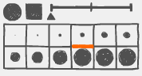
Adjust pen shape, size, and pen smoothing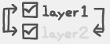
- This is a layer selection box. The left side arrow is the function of swap the image of layer 1 and layer 2.Click on the text to select the layer. Click twice or more to display or cancel that layer individually.
When the box is checked, only the move image tool and the lasso tool are activated. These two tools modify the image on both layers 1 and 2. However, if the checkmark is on, only that layer can be edited.
The right side arrow is the function of merge the layers.
It feels like a pixel line.
Pen like air brush
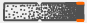
Adjust pen opacity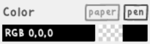
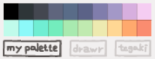
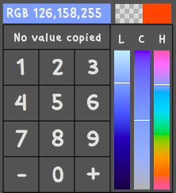
This button changes to replay mode and drawing mode.
Button to change to capture mode.
This is the Save button.The path and name are asked only for the first save. The next time you click it, it is saved with the path and name you specified. - Right-click the Save button or press the shortcut ‘Ctrl+Shift+S’ if you want to save it with a new path and name. - It makes .png files and .2020 files. The .2020 file contains raw images and replay data. If you continue to draw we recommend that you load the .2020 file - Large image sizes and replay files can take longer to save. During the save process, some buttons are disabled.
This is the Load button. You can load .2020 files and .png, .gif, .jpg files. - You can also drag and drop files to load image. - The maximum resolution supported by the program is 2000x2000. If the image exceeds this resolution, it will be forcibly resized.
If there is a copied image on the clipboard, this button is activated.
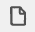
The button to create a new file. You can press the shortcut ‘ESC’ or ‘Delete’ twice. - When a new file is created, the existing image and replay data will delet completely, so save the data before using it.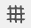
Grid display button. Each press changes or turns off the grid spacing.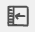
Button to change the tool menu position to left and right.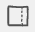
This button that hides the tool menu. - Move the cursor to the edge of the window to see the Tools menu.This button that changes the color of the interface.
Displays a new window. - This is a window where you can see canvas image. - Right-click to adjust the window size to fit the image. - With the window active, press esc key to close the window. - You can move the position of the window by click+dragging inside the window.
This Button that shows program information. - You can view the manual by language and there is a button to initialize the app. - When a new version is detected, it changes to an exclamation mark display. Depending on the update, the application may be initialized, so please save the data before updating. - If the update fails, please install the runtime to the latest version. https://airsdk.harman.com/runtime
This button captures the image currently being drawn.
Create a new file with the currently drawn image first. - Once a new file is created, the existing image and replay data will delete completely, so save the data before using it.
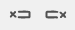
A button that delete the front/back part of the replay data.Press this button for 2 seconds after moving to the desired point in the frame search bar. Use this button to leave only the replay data you want. You should be careful because the replay data operation also affects the picture you draw in draw mode.
Zoom in/out canvas. Right-click to reset zoom.
Align the canvas to the center of the window. Every time you click, it turned ON/OFF.
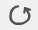
Rotates the canvas. Click and dragthis button that draw image by stroke unit. Right-click this button, or press and hold the ‘Shift’ key to draw by 1 frame.
If this button is activated, the replay will repeat 10 seconds later when it ends.
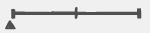
A bar that can control the replay speed. - Not active if playback time is short.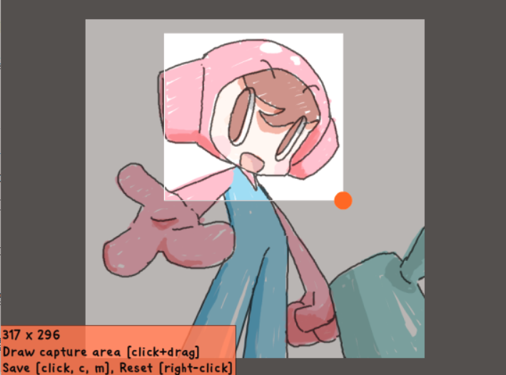
Exit capture mode.
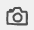
Save the full image. - In capture mode, you can also save images by specifying areas with click+drag.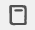
Copy the entire or selected area to the clipboard. Once used, the button is disabled to prevent duplicate copies. If a new area is selected or the image is rotated/inverted, it will be reactivated.Rotate image
Flip image horizontal.
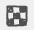
Transparent background ON/OFF.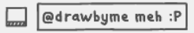
Add stamps to images. You can write a comment of up to two lines, and the saved date and app version are also displayed.R
Y) and draw the desired area on canvas.Tranfer the image of the selected area to the reference layer. If an image is already drawn on the reference layer, it continues to be drawn on it.
Swaps the layer positions of the selected images. If you accidentally drew a line drawing on layer 2, you can use this function to move part of the image to layer 1. Cannot be used if one layer is invisible or checked.
Merge the layers of the selected area into layer 2.
Flip horizontal the selected area.
Move the selected area by 1 pixel.
Copies the selected area.
Rotate or zoom in or out of the selected area.
Button to transfer current image to the reference layer. - If an image is already drawn on the reference layer, it continues to be drawn on it. - Press the Undo button to restore the original image. - Draw a sketch on this layer, press this button to transfer image to the reference layer, and draw clean by referring to the image of the reference layer.
This is a button that loads another image into reference layer. - The image in the reference layer is erased and the imported image is newly drawn. - When you want to practice tracing, use this button to load the image.
Button to copy images copied to the clipboard to the reference layer - This button is activated if there is a copied image on the clipboard.
Memory training button. - If you press this button to close eye, the reference layer becomes invisible each time you draw. When you practice image trace, you can practice remembering the shape.
Delete image of reference layer
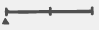
A bar that controls the transparency of the reference layer. - When a new image is copied to the reference layer, transparency is readjusted to 50%.Hold down the Ctrl key or the mouse right click for
a second to see a border around the canvas.
Then click and drag the desired border to adjust the canvas to the desired size. No diagonal adjustment, only horizontal or vertical adjustments are possible.
Release the Ctrl key or right-click to end the
canvas sizing.
When adjusting the canvas size, Hold the mouse cursor over the grid line that appears at the canvas boundary
When you are resizing the canvas, you can resize the canvas with a specific ratio by placing the mouse cursor over the grid line that appears at the canvas boundary.
When the window size scale is set to 125% or higher on a high-resolution monitor, set whether FOFO Paint UI scale is 1:1 or not.
Find the fofopaint.exe. If you did a default installation, it’s in the path “C:Files (x86)”
Right-click fofopaint.exe and go to Properties. Click the Compatibility tab.
Click Change high DPI setting, if the DPI override tab at the bottom of the new window is active, the UI of the FOFO PAINT app will maintain 1:1 scaling and If unchecked, it is slightly enlarged according to the magnification of the window size.
If the high DPI setting does not change, click “Change for all users” and click Change high DPI setting again to set it.
For Windows operating system, go to < C: [username] > or < %appdata%> path to find the file. After deleting all these files and launching the app, the app initializes.
Alternatively, search for the name “repdata” in file search, go to that location and delete all files.